Kurate
Kurate · Fukuoka
Kurate
Highlighted on the Fukuoka map.
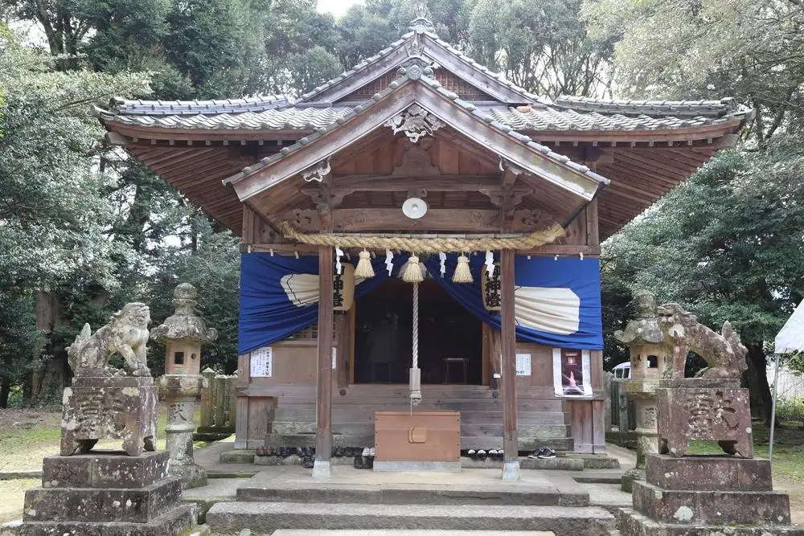
Dining
うどん屋 仁
Udon Ya Hitoshi
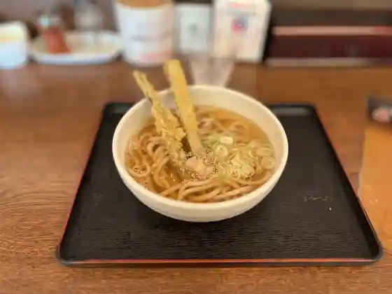
和牛レストランふるの
Wagyuu Resutoran Furuno
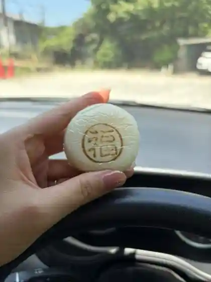
福本工房 福ちゃん饅頭
Fukumoto Koubou Fuku Chan Manjuu
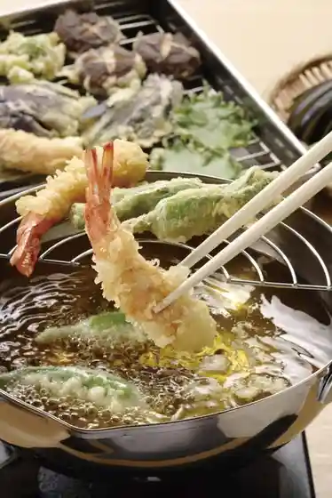
独楽
Koma
ラーメンハウス 味良
Raamenhausu Miyoshi
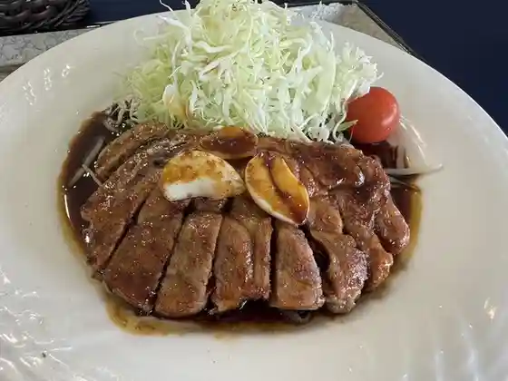
ムーンレイクゴルフクラブ 鞍手コース
Muunreikugorufukurabu Kurate Koosu
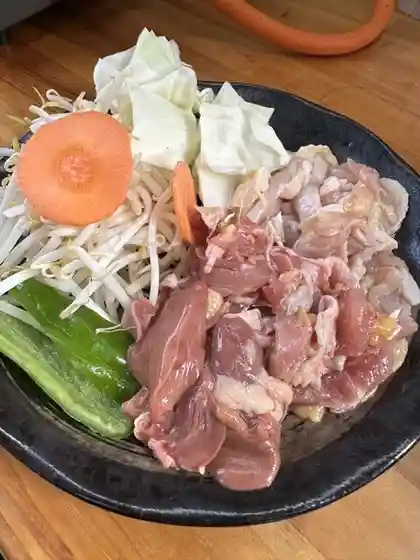
味宝卵食堂
Aji Takara Tamago Shokudo
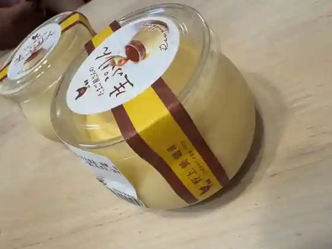
野上養鶏場
Nogami Youkei Ba
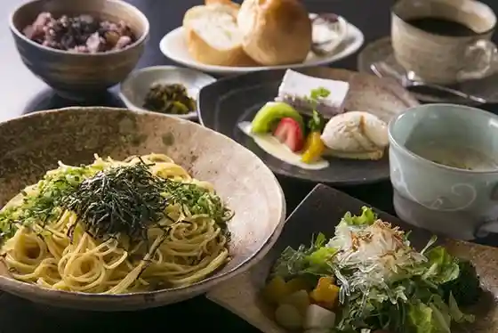
文化屋
Bunka Ya
麺屋 心
Men Ya Kokoro
笹山
Sasayama
田々夢詩
Ta (kurikaesi) Yume Shi
ファーマーズキッチン ベジバル
Faamaazukitchin Bejibaru
田なかうどん
Ta Nakaudon
茶寮 GARYOU
GARYOU
MORINOKURA
MORINOKURA
四五久うどん
Shigo Kyuu Udon
ヒッコリーのきのみ
Hikkorii Nokinomi
やきたてパン工房 Cuddly
Cuddly
古民家カフェ&雑貨 木花咲耶
Ko Minka Kafe & Zakka Ki Hanasaki Ya
松屋 鞍手PA(下り線)店
Matsuya Kurate Pa( Kudari Sen ) Mise
寿し竜馬
Hisashi Shi Ryuuma
ジェラートおかまつ
Jieraato Okamatsu
Marie's Cafe
Marie&39s Cafe
麺勝 鞍手店
Men Kachi Kurate Mise
Food Cafe ほぬ
Food Cafe
焼肉ふじ
Yakiniku Fuji
ONDO
ONDO
貴黄卵
Takashi Ouran
セブンイレブン 九州道鞍手PA下り店
Sebun'irebun Kyuushuu Michi Kurate Pa Kudari Mise
Sakanaya Side
Sakanaya Side
いしい
Ishii
おこのみ焼き 鉄板焼 楽
Okonomi Yaki Teppanyaki Raku
髭
Hige
たこ焼き米庵
Tako Yaki Beian
炭火だいにんぐ 大笑
Sumibi Dainingu Taishou
ひよ子本舗 吉野堂 鞍手店
Hiyo Ko Honpo Yoshino Dou Kurate Mise
クラバード
Kurabaado
トライアル スーパーセンター鞍手店
Toraiaru Suupaasentaa Kurate Mise
てんてこまい
Tentekomai
KAWASHOKU 食彩館 鞍手店
KAWASHOKU
cheryco
cheryco
兆治
Chouji
CREPE SHOP dolce
CREPE SHOP dolce
ほっともっと 鞍手町店
Hottomotto Kurate Machi Mise
喫茶 シンクロ
Kissa Shinkuro
匠
Takumi
なんでんや龍
Nandenya Ryuu
ノンノン
Nonnon
肉の菊池屋
Niku No Kikuchi Ya
たこ焼きありちゃん
Tako Yaki Arichan
蕎麦&ギャラリー てんてこまい
Soba & Gyararii Tentekomai
天手古舞
Tentekomai
中山うどん
Nakayama Udon
怪物
Kaibutsu
suffle dale
suffle dale
ほかほか弁当 鞍手町店
Hokahoka Bentou Kurate Machi Mise
Fukuchan Udon
Fukuchan Udon
Kokagetei Kurate Parking Area
Kokagetei Kurate Parking Area
Ramen House Ajiyoshi
Ramen House Ajiyoshi
Restaurant Dendenmushi
Restaurant Dendenmushi
Ryoma
Ryoma
Kitchen Kobo Ekubo
Kitchen Kobo Ekubo
Eto
Eto
Ribe
Ribe
Moon Lake Golf Club Kurate Course
Moon Lake Golf Club Kurate Course
Kurate Shokudo Dansan
Kurate Shokudo Dansan
Fu Flip
Fu Flip
Sushi Ryoma
Sushi Ryoma
Magokoro
Magokoro
Warm Lunch Kurate Machiten
Warm Lunch Kurate Machiten
Dining San
Dining San
Yakiniku Sokaen
Yakiniku Sokaen
Yakiniku Hakuryuzan
Yakiniku Hakuryuzan
Sochan
Sochan
Karaoke Donguri
Karaoke Donguri
Hickory Nokinomi
Hickory Nokinomi
Izakaya Dori
Izakaya Dori
Gembu
Gembu
Pancoppe
Pancoppe
Kara Age Taisho Kurate
Kara Age Taisho Kurate
Hanako
Hanako
Confectionery Kongariya
Confectionery Kongariya
Handmade Cookies Yutakanosato
Handmade Cookies Yutakanosato
Tengenryu
Tengenryu
Cafe Synchro
Cafe Synchro
So So
So So
Stay
HOTEL R9 The Yard 鞍手
HOTEL R9 The Yard
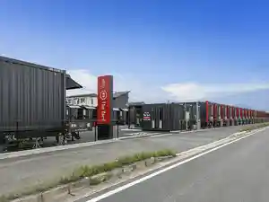
Sights
Kurate Sekitan Shiryo Tenjijo
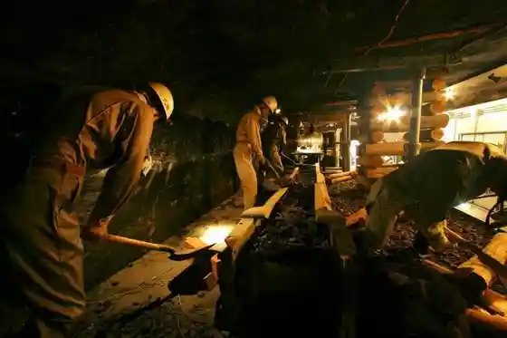
Kurate Rekishi Minzoku Museum
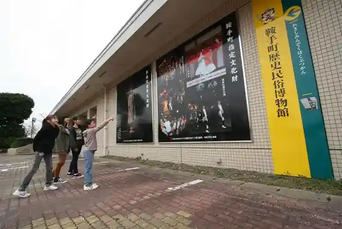
Roku Gaku Shrine
Mokuzo Juichi Men Kannon
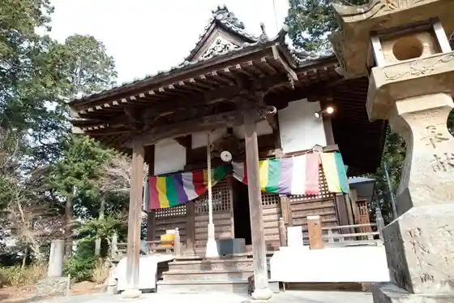
Ito Tsunetari Kyutaku
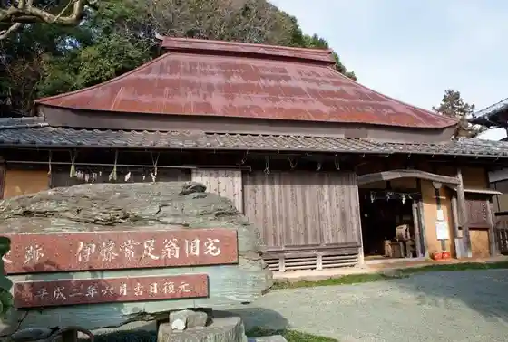
Ko Gatsu Yokoana
Atsuta Shrine
Shin En Otsuka Burial Mound